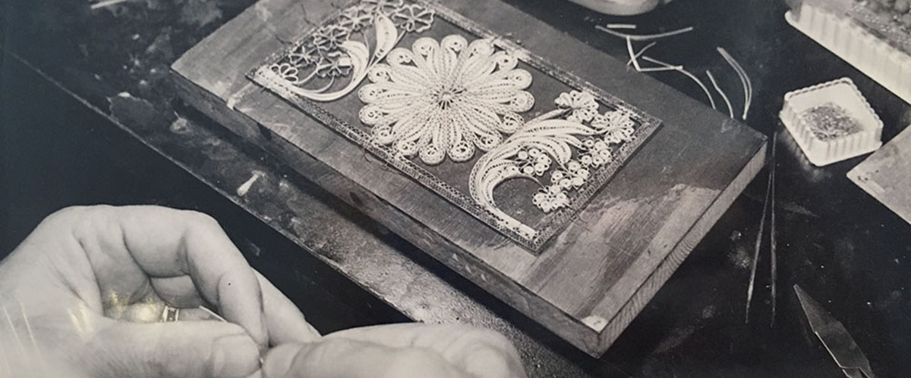

Artizanët filigranë, trashëgimia që ne paraqesim
Enciklopedisti i mirënjohur Evliya Çelebi, një poet nga shekulli XVI në shkrimet e tij me poezi përshkruanë se në Prizren nëse lind një fëmijë mashkull atëherë ai do të gjejë rrugën e tij para se ai të pagëzohet. Arte, të tilla si ato krijuar nga Evliya Çelebi po vazhdojnë si një burim i traditës së qytetit. Poeti rrëfen dhe thotë eja shiko këtë qytet sepse këtu është zhvilluar jo vetëm literatura por gjithashtu arti i muzikës. Kjo dëshmohet nga telat e çiftelisë, mandolina, etj, gjatë transmetimit të këngëve. Prizreni në ndërtesën e tij ka një art të mrekullueshem. Ky art është zbukuruar nga ndërtesat me kupola të larta dhe tela të ndryshëm instrumente gjatë këndimit të këngëve. Piktura të ndryshme, endje kanaçe ose ndonjë lëvizje e furçës është një lloj i veçantë arti. Prizreni është qyteti i zanateve. Sot megjithëse artizanatët si pemëtari, krijues i shalës, kallajxhi dhe Veshjet e ujit ekzistojnë dhe janë perfekte, të tjera zanatet mbeten në përputhje me ato tradicionale p.sh .: telat e argjendta ende punohen me një disiplinë dhe dashuri të zjarrtë si dhe të bërë me dorë punon me mostra të ndryshme të dantella argjendi. Nëse jeni afër një farkëtari, atëherë mundeni dëgjoni një tingull që ju bën të mendoni se ky është një tingull i një instrumenti muzikor që vjen nga çekiçët e zotërve ndërsa ai e godet këtë metal për t'i dhënë një formë të duhur një vegle. Brenda Prizreni mund të vërehet zanat si: këpucar, rrobaqepës dhe berber që do të thotë se mund të takoheni zanatet tradicionale që vazhdojnë të jetojnë në heshtje një jetë mes qytetarëve. Jeta e pasur kulturore e Prizrenit është një arsye tjetër për ta përshkruar atë si një qytet të kulturës. Prizreni është qyteti i Dokufest, një nga më të botët festivale të njohura të filmave të shkurtër dhe dokumentarëve. Gjithashtu, në Prizren tradicionalisht organizohet një festival këngësh "Zambaku i Prizrenit" (Zambaku i Prizren), e cila është e vetmja që kultivon këngët e vjetra qytetare. Gjatë një viti, rreth 50 aktivitete kulturore organizohen në Prizren.


Sekretet e punës së Filigranit janë ruajtur brez pas brezi në qytetin e Prizrenit. Filigran është një zanat antik që përdor kryesisht argjendi dhe ari për të prodhuar vepra arti shumë të imëta. Origjina filigran besohet të vijë që nga viti Egjiptianët, megjithatë, supozohet se në Kosova është e pranishme që nga shekulli i 15-të. Filigran prodhohet në rajonin ku madje sot ka rreth 10 biznese familjare që janë aktive në përpunimin dhe prodhimin vepra interesante të cilat mund të gjenden në Suvenire nga Prizreni. Në vitet 1980, tregtia e filigranit lulëzoi. Në atë kohë në Prizren kishte 150 deri 200 artizanë. Ky zanat i ka dhënë Prizrenit shumë famë gjatë shekujve. Nuk ka një datë të saktë kur shqiptarët në Kosovë filluan të punojnë me argjend, por historianët thonë se kjo ndoshta ka ndodhur diku në shekullin e 18-të. Shumë artizanë nga Prizreni u larguan nga qyteti dhe u zhvendosën në Dubrovnik, Kroaci, ku gjetën biznes më të mirë.